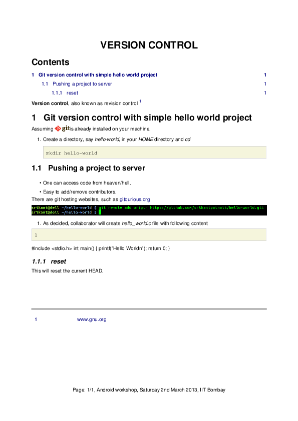

A major thing that matters in any software project is documentaion. It helps develop a sense of trust and confidence.
Without a proper documentation/manual, users tend to migrate. So, it is always true to say,
“Documentation is more important than code“
Companies like Google, Oracle, Microsoft, Apple, spend a large share of their development resources on user help content.
The GNU project also provides excellent documentation. In any GNU/Linux machine one can access it by
man <command-name>
Here man stands for manual.
Office Suite (Microsoft Office or Open Office)
Export to pdf and html, are available.
LaTeX(tex): is a document markup language and document preparation system for the TeX typesetting program. LaTeX is a FOSS tool, and can be used to prepare any kind of complex documentation.
It has a steep learning curve, but once you get accustomed, it is all fun.
It can export document to pdf, html and other popular formats.
Wikitext language: is a lightweight markup language to write wiki pages(html).
Export to pdf is not available.
reStructuredText(rst): abbreviated as reST is a lightweight markup language designed to be both
- processable by documentation-processing software such as Docutils, and
- easily readable by human programmers.
It can export a document to pdf, html, odt, latex, xml, and other popular formats.
MarkDown(md) : is a lightweight markup language which demands a file in plain text.
It is also a FOSS tool and is very close to rst.
It can export a document to pdf, html and other popular formats.
We will limit ourselves to ReST only. First appeared in 2012, ReST project is mature enough to be used as professional tool.
There is no need of any tutorial or sessions for ReST, it is as easy as writing in any text processor.
All one need is a manual or online documentation.
Just comparing with any rst file with it’s corresponding pdf will give you idea about most of the markups.
This is a simple example text with most frequently used markups. To convert this file to pdf, please install rst2pdf from package manager, or download source from here
1 2 3 4 5 6 7 8 9 10 11 12 13 14 15 16 17 18 19 20 21 22 23 24 25 26 27 28 29 30 31 32 33 34 35 36 37 38 39 40 41 42 43 44 45 46 47 48 49 50 51 52 | VERSION CONTROL
===============
.. contents::
.. section-numbering::
.. footer::
Page: ###Page###/###Total###, Android workshop, Saturday 2nd March 2013, IIT Bombay
**Version control**, also known as revision control [#]_
.. [#] `www.gnu.org <http://www.gnu.org/>`_
Git version control with simple hello world project
---------------------------------------------------
Assuming |logo.png| is already installed on your machine.
.. |logo.png| image:: data/logo.png
:width: 30%
#. Create a directory, say `hello-world`, in your `HOME` directory and `cd` ::
mkdir hello-world
Pushing a project to server
~~~~~~~~~~~~~~~~~~~~~~~~~~~
* One can access code from heaven/hell.
* Easy to add/remove contributors.
There are git hosting websites, such as `gitourious.org <http://gitorious.org/>`_
.. image:: data/git-remote-add.png
:width: 100%
#. As decided, collaborator will create *hello_world.c* file with following content
.. code-block:: c
:linenos:
#include <stdio.h>
int main() {
printf("Hello World\n");
return 0;
}
reset
^^^^^
This will reset the current HEAD.
|
Let’s save the above file as sample.rst, and convert it to pdf as
rst2pdf sample.rst -o sample.pdf
To convert with custom font
rst2pdf -s freetype-serif sample.rst -o sample.pdf
Now the converted pdf will look like
Simple, implicit markup is used to indicate special constructs, such as section headings, bullet lists, and emphasis.
A reStructuredText document is made up of body or block-level elements, and may be structured into sections. Sections are indicated through title style (underlines & optional overlines). Sections contain body elements and/or subsections. Some body elements contain further elements, such as lists containing list items, which in turn may contain paragraphs and other body elements. Others, such as paragraphs, contain text and inline markup elements.
For examples please visit ReST quickref
Directives are an extension mechanism for reStructuredText, a way of adding support for new constructs without adding new primary syntax (directives may support additional syntax locally).
All standard directives (those implemented and registered in the reference reStructuredText parser) are described in the reStructuredText Directives document, and are always available. Any other directives are domain-specific, and may require special action to make them available when processing the document.
Examples of directives:
placing a image
.. image:: logo.png
Directives are indicated by an explicit markup start (”.. ”) followed by the directive type, two colons, and whitespace (together called the “directive marker”).
Directives can have multiple option, similar to attributes to HTML.
For example, image directive can have following options
.. image:: logo.png
:height: 100px
:width: 200 px
:scale: 50 %
:alt: alternate text
:align: right
Indentation is used to indicate – and is only significant in indicating – block quotes, definitions (in definition list items), and local nested content:
Since all indentation is significant, the level of indentation must be consistent.
Sphinx is a tool that makes it easy to create intelligent and beautiful documentation.
Sphinx uses reStructuredText as its markup language, and many of its strengths come from the power and straightforwardness of reStructuredText and its parsing and translating suite, the Docutils.
To install sphinx
sudo apt-get install python-sphinx
Steps to follow :
To start generating html from rst
sphinx-quickstart
Accept all default questions by hitting enter key for a default build.
Read the questions if you want anything other than default.
Now open index.rst and add your ReST file names (without extension), and with proper indentation. Assuming all ReST files in present working directory.
Now, simply do
make html
Now go to _build/html directory and open index.html in web browser.
That’s all.
{kind=link}